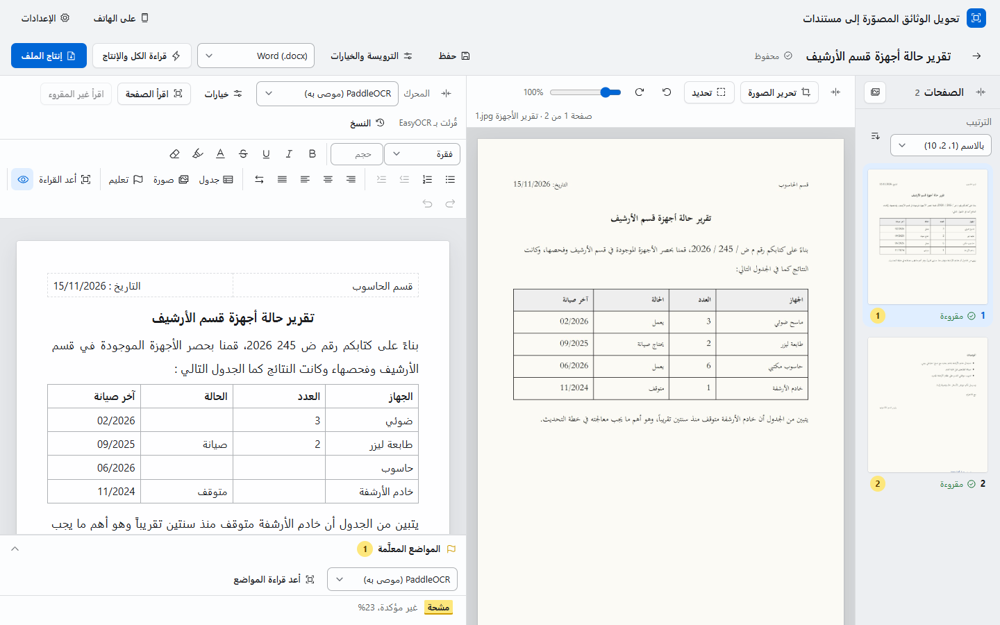
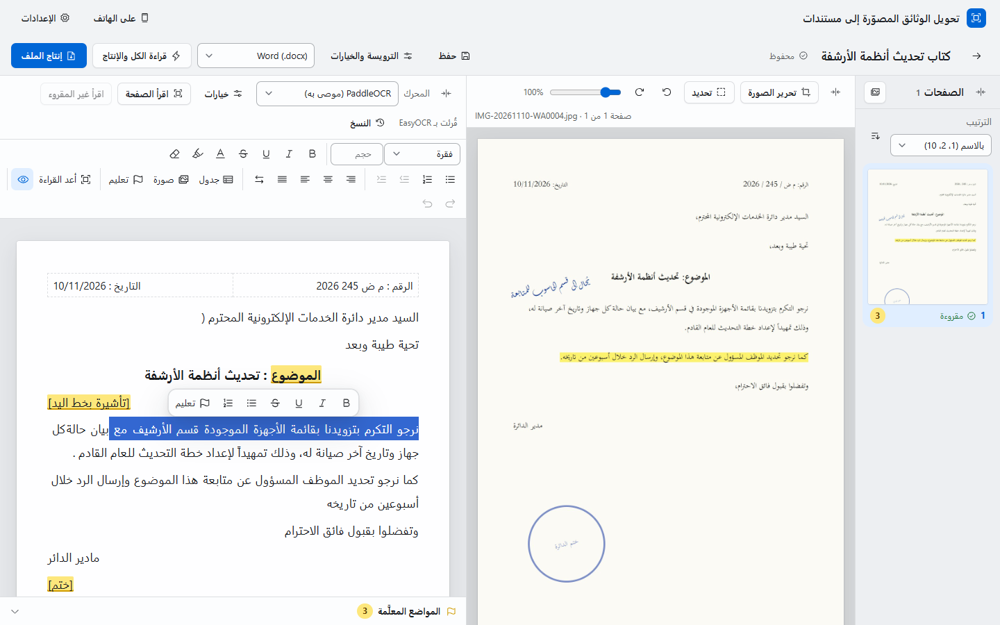

حرف Harf OCR: تحويل الوثائق المصوّرة إلى مستندات رقمية
صوّر الوثيقة بالهاتف، وراجع نصّها بجانب الصورة، واحصل على ملف Word على ترويسة مكتبك.

أضف الصور
صفحات الوثيقة بالترتيب، أو صورة منسوخة تلصقها.
اقرأها
بقارئ مجاني على جهازك، أو عبر Claude وGoogle بمفتاحك.
راجعها
النص بجانب الصورة، وكل كلمة غير واضحة مظلّلة.
أنتج الملف
Word أو PDF على قالب ترويسة مكتبك.
المزايا

كل سطر يعرف مكانه في الصورة
اضغط على أي سطر في النص فيظهر موضعه على الصورة. وإن لم تقتنع بقراءته، اقرأه من جديد بقارئ آخر.

لا شيء يُخمَّن
التوقيع والختم والخط اليدوي لا تتحول إلى نص مخترع. تبقى علامة مظلّلة في مكانها، ومعها ملاحظة تصل إلى الملف النهائي.
محرر يشبه Word
جداول وقوائم وصور وحدود فقرات، وكلها تصل إلى ملف Word كما رأيتها.



والمراجعة من الهاتف أيضًا
اضغط «على الهاتف» في البرنامج، وامسح الرمز، واكتب كلمة المرور. يعمل الهاتف على المسودات نفسها ما دام البرنامج مفتوحًا على الحاسوب، والرابط وكلمة المرور جديدان في كل مرة.
اختر من يقرأ الصفحة
على جهازك، مجانًا
PaddleOCR, Nuqta, Tesseract, EasyOCR
تعمل دون إنترنت، فلا تغادر الصور جهازك. Nuqta هو الأدق للعربية لكنه أبطأ.
بالذكاء الاصطناعي، بمفتاحك
Claude, Google Cloud Vision
تُرسل صورة الصفحة إلى الشركة مع مفتاحك أنت، ولا يُحفظ المفتاح.
أسئلة قبل التنزيل
هل هو مجاني فعلًا؟
نعم. البرنامج مفتوح المصدر برخصة MIT، والقرّاء التي تعمل على الجهاز مجانية. Claude وGoogle Vision وحدهما يحتاجان مفتاحك، وتدفع لهما مباشرة.
ماذا يحتاج جهازي؟
Windows. المثبّت نحو 250 ميجابايت، ويسألك إن كنت تريد Nuqta وEasyOCR (نحو 2 جيجابايت إضافية، ويمكن تنزيلهما لاحقًا من الإعدادات). ملفات Word تعمل دائمًا، أما PDF وODT وTXT فتحتاج Microsoft Word أو LibreOffice على الجهاز.
ظهر تحذير من Windows عند التثبيت
المثبّت غير موقّع بعد، لذلك يعرض Windows SmartScreen تحذيرًا. اضغط «مزيد من المعلومات» ثم «تشغيل على أي حال».
هل يقرأ الصفحات الإنجليزية؟
نعم، الصفحات العربية والإنجليزية، والكلمات العربية داخل صفحة إنجليزية بترتيبها الصحيح. والواجهة نفسها بالعربية والإنجليزية.
كيف أحدّثه؟
يتحقق البرنامج عند تشغيله من وجود إصدار جديد ويعرض ما الجديد فيه. اضغط «تحديث» فيُنزَّل ويُثبَّت ويُفتح البرنامج من جديد، ومسوّداتك وإعداداتك كما هي.
هل يعمل على خادم للمكتب كله؟
نعم، كتطبيق ويب عبر Docker. التعليمات في صفحة المشروع على GitHub.
Harf OCR in English
Harf OCR is a free, open-source Windows program that turns phone photos of Arabic documents into Word and PDF files on your office letterhead. It reads Arabic and English pages and keeps tables, lists and headings.
Signatures, stamps and handwriting aren't guessed into the text. Each one stays highlighted in its place with a note, and the note goes into the file. The free readers run on your computer, so your photos stay there. The interface comes in Arabic and English.
Download for Windowsجرّبه على وثيقة من مكتبك
مجاني ومفتوح المصدر، برخصة MIT.